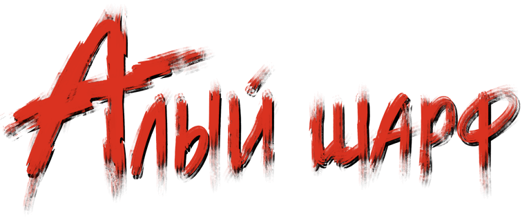

В сонном, укутанном туманами городке Ройштадте зреет беда. В центральных, благопристойных кварталах стали заболевать добрые горожане — и их болезнь не известна ни ученым лекарям, ни братьям-санаторам*. На шее, груди и животе открываются трещины и больной истекает кровью, которая, засыхая, рисует на его теле бурую полосу.
На доме каждого заболевшего видели алый шелковый шарф, но несмотря на обилие свидетелей, никто не принес ни одного для исследования. Район взят в карантин, но неизвестного злодея, разносящего мор, так и не поймали.
Наш герой — брат-санатор Рихард Мёрдок, который вместе с коллегами силится остановить неведомую заразу.